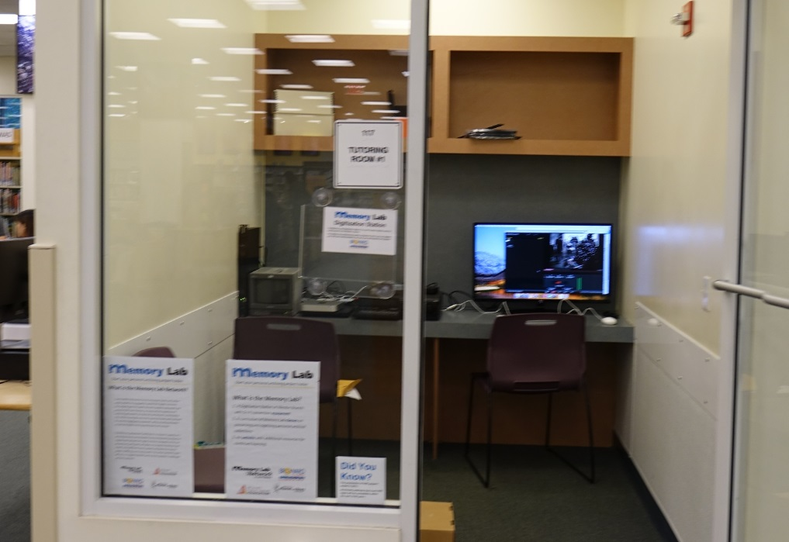
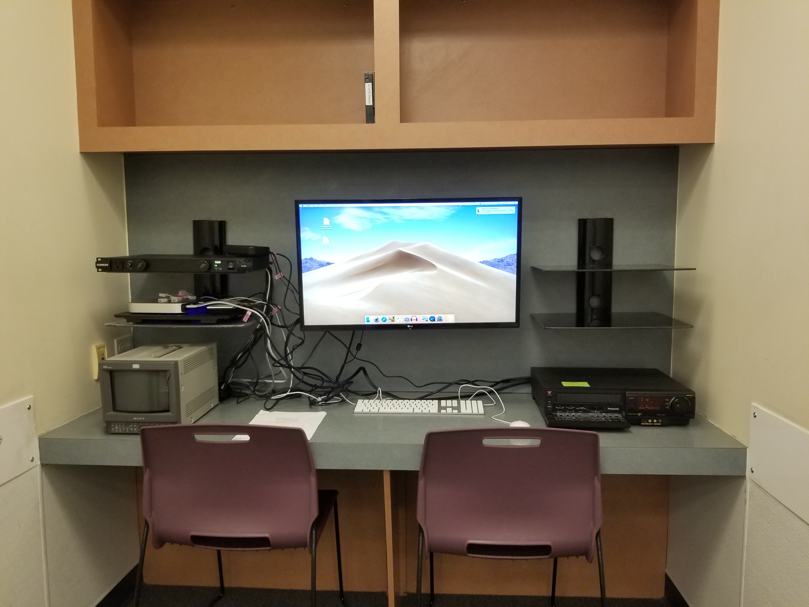
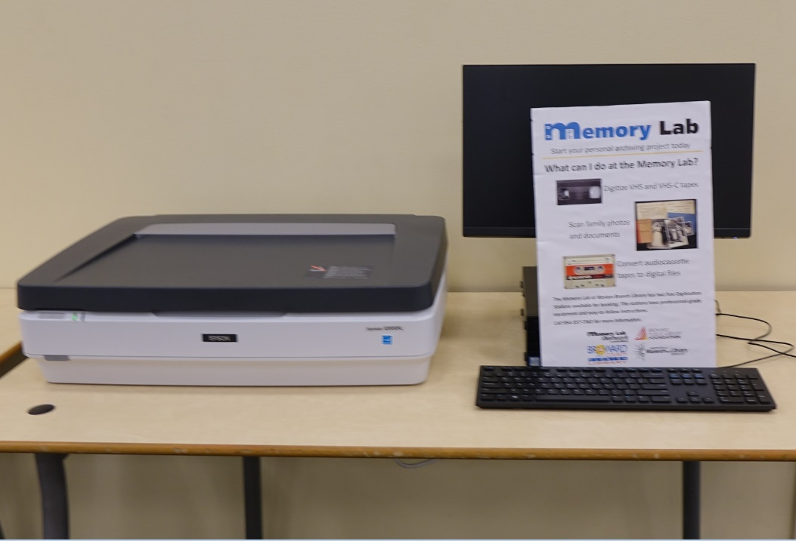

Interface
The blog of the Memory Lab Network
May 13, 2019: Building the Broward County Library Digital Memory Lab
Part II
Written by Erin Purdy, Curator, Broward County Library
After months of waiting, the Memory Lab became a real team effort in January 2019.The equipment was unboxed and tested during the second week of January, I provided quick hands-on training sessions to the library branch staff, then we officially opened the Memory lab to the public on Wednesday, January 16, 2019. Since I work at Main Library, far away from the Weston Branch where the Memory Lab equipment is located, I have to thank staff who run the Memory Lab on a daily basis: Tiffani Baker-Robinson, Sonia Collazo, Karen Gelover, Catherine Hammer, David Lawrence, Bethany Serchay, Jasmin Springer, and Melody Chait. They work at an extremely busy branch library, and they took on the additional workload that the Memory Lab brought them with a huge amount of generosity that truly blew me away. They made important comments on the policies and manuals that I would not have thought of, and were incredibly supportive of the classes and orientations. I also want to thank Edwin Browne and the Libraries IT department, who helped me set up and test all of the equipment and software, and Building Services Manager, Miguel Wright, procured the furniture and racks and made sure that the Memory Lab looked good.
One of the main ways that our lab differs from the original one in D.C. is that we require customers to attend a mandatory Orientation Session before they can use the equipment. The advantage of this policy is that all the customers understand what the Memory Lab is and what they need to do to be successful in their project. As a result, they need minimal assistance from the library branch staff. 148 customers so far have attended an orientation session and registered to use the Memory Lab equipment. They have booked and used the equipment more than 90 times, totaling more than 180 hours spent digitizing. The most popular uses of the lab equipment are batch-scanning 35mm slides and digitizing VHS tapes. We knew that free VHS tape digitization would be a hit with ourcustomers, but since opening the Memory Lab, it has become apparent that a transparency scanner should be considered a necessary component of any Memory Lab. Because many of the customers have their own scanners at home or have access to scanners through other avenues, photograph scanning is the least popularuse of the lab, but the customers do not have slide and transparency scanners and really appreciate the batch-scanning feature.
One day I received a phone call from a customer who attended our Orientation and then never made an appointment to use the equipment. Turns out, he bought his own Memory Lab equipment with the pro-grade VHS deck, and has been digitizing his tapes at home. He called to ask a few questions and to thank us for the great information and inspiration he got at the Memory Lab. The response from the customers has been overwhelming. The customers can’t say enough good things about the Memory Lab. They absolutely love the Memory Lab: they love that the library is providing them with access to high-end equipment, theylove the information that they learn in the classes, and they love that the Memory Lab inspires them to work on their own personal archiving projects with confidence.